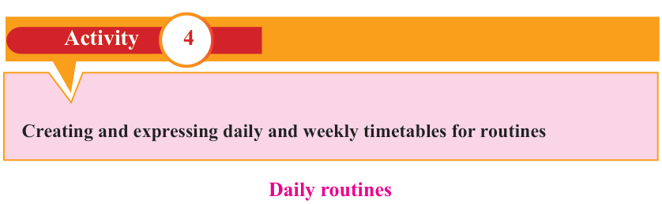

English for Secondary Schools Student’s Book Form One, printed page 177
Task symbol: a blue clipboard with a pen and four checked boxes.

Task
Compose a dialogue of not more than a page using any topic of your choice.Then, act it out to the class.

Creating and expressing daily and weekly timetables for routines
Daily routines
Activity 4
(a) Listen to the “Story of the day” from your teacher.Then, do the task below.
 Student writing at a desk with books, an open notebook, and a lamp.
Student writing at a desk with books, an open notebook, and a lamp.Exercise
Using the teacher’s story as a guide, write your own story of the day.This can be either real or imaginary.Then, present the story to the class.
(b) Pair up to take turns to ask and answer the following questions.
- 1. What time of the day do you wake up?
- 2. What do you do after waking up?
- 3. What do you do before having breakfast?
- 4. What means of transport do you use to go to school?
- 5. What time of the day do classes end?
- 6. What do you do when you arrive home from school?
- 7. What time of the day do you go to bed?